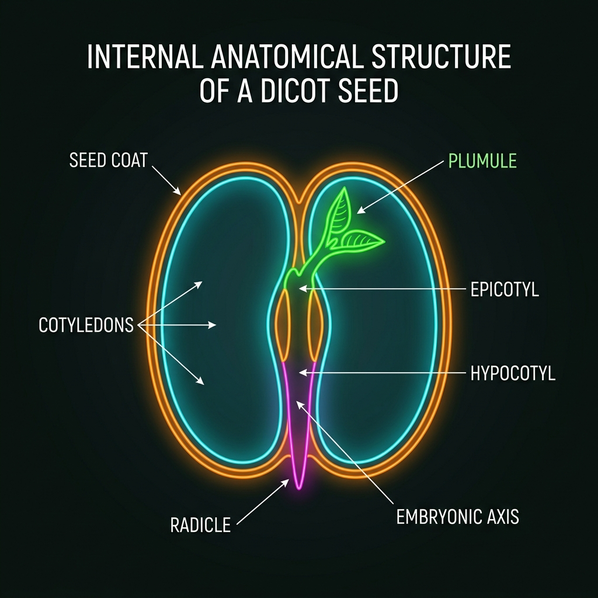
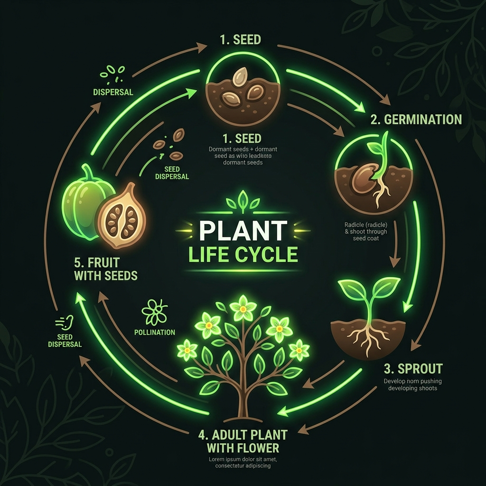

Del embrión a la planta
La germinación es el proceso por el cual una semilla pasa de un estado de latencia (vida suspendida) a un estado de crecimiento activo. Es el nacimiento de una nueva planta. Dentro de cada semilla hay un embrión —una planta en miniatura— que espera las condiciones adecuadas para comenzar a desarrollarse.
El embrión dentro de la semilla ya tiene las estructuras básicas: una radícula (futura raíz), un tallito embrionario (plúmula) y uno o dos cotiledones (hojas embrionarias llenas de nutrientes). Todo esto está protegido por una cubierta llamada tegumento o cubierta seminal.

Anatomía de una Semilla: El Embrión y sus Partes
Lo que en el aula tarda una o dos semanas, acá pasa en segundos. Fijate en el orden: primero baja la raíz (para conseguir agua y anclarse), después sube el tallo. Los cotiledones alimentan a la plántula hasta que las hojas verdaderas empiezan a hacer fotosíntesis — entonces se secan y caen: ya cumplieron su misión.
¿Qué necesita una semilla?
En 2005, científicos lograron germinar una semilla de palmera datilera de 2000 años de antigüedad encontrada en la fortaleza de Masada, Israel. Las semillas pueden permanecer dormidas por milenios esperando las condiciones ideales.
Para que una semilla germine se necesitan tres condiciones básicas: agua, oxígeno y una temperatura adecuada. La luz no siempre es necesaria; de hecho, la mayoría de las semillas germinan bajo tierra, en la oscuridad.
Agua
El agua hidrata la semilla, la hincha y rompe el tegumento. Activa las enzimas que transforman los nutrientes de reserva en alimento utilizable por el embrión. Sin agua, la semilla permanece latente indefinidamente.
Oxígeno
El embrión necesita respirar. La germinación es un proceso que consume mucha energía, y esa energía se obtiene mediante la respiración celular, que requiere O₂. Si la semilla está en un suelo encharcado y sin aire, se pudre.
Temperatura
Cada especie tiene un rango óptimo de temperatura para germinar. La mayoría de las plantas de clima templado germinan entre 15 °C y 25 °C. El frío extremo detiene el proceso; el calor excesivo puede dañar el embrión.
Experimento en el aula
Una de las experiencias más lindas en Biología de primer año es ver germinar una semilla. Vamos a hacer un experimento sencillo y fascinante: sembrar porotos (o lentejas) en algodón húmedo y observar día a día cómo la semilla se transforma en una pequeña planta.
Materiales
- • 3 o 4 porotos secos (o lentejas, o garbanzos).
- • Un frasco de vidrio transparente.
- • Algodón.
- • Agua (sin excederse: húmedo, no encharcado).
- • Un cuaderno para registrar las observaciones.
Procedimiento
- 1. Colocá algodón en el fondo del frasco, sin compactarlo demasiado.
- 2. Humedecé el algodón con agua. No debe quedar encharcado, solo húmedo.
- 3. Colocá los porotos entre el algodón y la pared del frasco, para poder verlos.
- 4. Dejá el frasco en un lugar con luz indirecta y temperatura templada.
- 5. Mantené el algodón húmedo agregando unas gotas de agua cada día.
- 6. Registrá tus observaciones cada día: dibujá lo que ves, medí con una regla, anotá cambios.
Este experimento te permite ver en tiempo real todo lo que aprendiste sobre las estructuras vegetales. Vas a poder identificar la radícula (futura raíz), el tallito, los cotiledones (las dos "hojitas" iniciales que alimentan a la planta en sus primeros días) y, después de una o dos semanas, las primeras hojas verdaderas.
Ciclo de vida
La vida de una planta con flor sigue un ciclo cerrado que empieza y termina con una semilla. Entender este ciclo nos ayuda a ver la planta no como algo estático, sino como un organismo en transformación permanente.

Diagrama: Ciclo de Vida Completo de las Angiospermas
Desde la semilla latente, pasando por la germinación, el desarrollo de la plántula, la adultez con la flor (órgano reproductor), la formación del fruto por fecundación, y finalmente la liberación de nuevas semillas.
Semilla
Estado de latencia. Contiene el embrión y las reservas de nutrientes. Puede permanecer así mucho tiempo hasta que las condiciones sean favorables.
Germinación
La semilla absorbe agua, el embrión se activa y la radícula rompe el tegumento. La planta emerge del suelo usando la energía de los cotiledones.
Plántula
Aparecen las primeras hojas verdaderas y comienza la fotosíntesis. La planta ya no depende de los cotiledones (que se secan y caen).
Planta adulta
Sistema radicular y aéreo completamente desarrollados. La planta crece, produce más hojas y ramas, acumula reservas y se prepara para la reproducción.
Flor → Fruto → Semilla
La planta florece. Tras la polinización y fecundación, el ovario se transforma en fruto y los óvulos en semillas. El ciclo se cierra y vuelve a comenzar.
Observación con lupa
A medida que el poroto germina, vamos a usar una lupa de mano para observar más de cerca las estructuras que van apareciendo. La lupa nos permite ver detalles que a simple vista no notaríamos y nos acerca al trabajo de un verdadero científico.
¿Qué buscar con la lupa?
- • Raíz primaria (radícula): es lo primero que sale de la semilla. Buscá los pelitos absorbentes en la zona cercana a la punta.
- • Tallito (hipocótilo): la parte que conecta la raíz con los cotiledones. Al principio es blanco, después se pone verde.
- • Cotiledones: las dos "hojitas" gruesas que salen primero. Con lupa se puede ver la textura y las venas. Contienen las reservas de alimento del embrión.
- • Primeras hojas verdaderas: cuando aparecen, son distintas a los cotiledones: más finitas y con la forma característica de la especie.
- • Tegumento: la cáscara de la semilla que queda adherida a los cotiledones o cae al suelo. Observá su textura y grosor.
Preguntas para pensar
1. Si ponemos una semilla en un frasco con agua pero sin oxígeno (por ejemplo, sumergida completamente), ¿germinará? ¿Por qué?
2. Durante los primeros días de germinación, la planta no tiene hojas verdes. ¿De dónde saca la energía para crecer? ¿Está haciendo fotosíntesis?
3. Diseñá un experimento para probar si las semillas de poroto necesitan luz para germinar. ¿Cómo harías para que unas tengan luz y otras no, manteniendo iguales todas las demás condiciones?